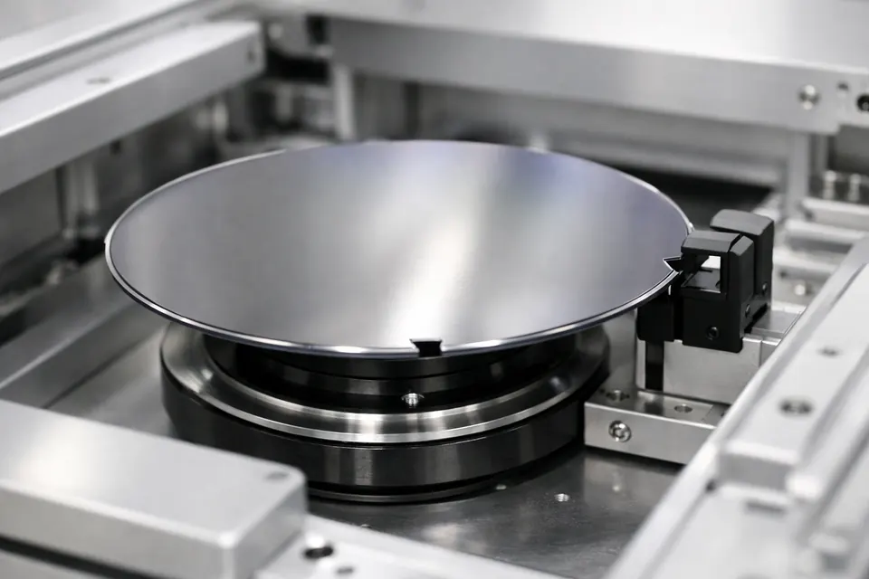

300 mm 웨이퍼 테두리에 깊이 1 mm 남짓한 V자 홈이 딱 하나 있습니다. 모든 장비가 이 홈을 "12시"로 삼습니다.
예전 작은 웨이퍼(150 mm 이하)는 한쪽을 직선으로 잘라낸 Flat으로 방향을 표시했습니다. 잘라낸 만큼 칩을 못 만듭니다. 웨이퍼가 커지고 비싸지자 손실이 작은 Notch가 표준이 됐습니다 — "한 칩이라도 더".
Notch 옆에는 보통 레이저로 새긴 웨이퍼 ID가 있습니다. 방향을 맞추면 ID가 늘 같은 자리에 오므로 카메라가 바로 읽습니다.
실리콘 원자가 한 방향으로 줄 맞춰 늘어선 거대한 단결정입니다. 나무에 결이 있듯 결정에도 결이 있습니다.
같은 약품으로 식각해도 결 방향마다 깎이는 속도가 다르고, 트랜지스터의 전류 흐름(이동도)도 방향에 따라 달라집니다.
흔히 쓰는 (100) 웨이퍼에서 Notch는 <110> 방향을 가리킵니다. 이온주입 장비는 이 기준으로 각도(Twist)를 정해, 이온이 결 사이로 너무 깊이 빠지는 채널링을 피합니다.
150 mm × 0.1° × π/180 ≈ 0.26 mm = 260,000 nm
최신 노광 장비가 층과 층을 겹치는 정밀도(오버레이)는 수 nm. 정렬대보다 약 10만 배 정밀해야 합니다.
| 무엇이 틀렸나 | 다음 장비에서 | 현장에서 보는 모습 |
|---|---|---|
| 중심 | 식각·증착 챔버의 척(ESC)과 둘레 링(Focus Ring)에 한쪽으로 치우쳐 놓인다 | 가장자리 한쪽만 막이 두껍거나 얇다(에지 불균일). 심하면 링에 걸쳐 흡착 불량·깨짐 |
| 중심 | 다음 스테이션에 놓을 때 여유가 줄어 벽·핀에 스친다 | 파티클(먼지)·긁힘, "웨이퍼 미끄러짐" 알람 |
| 방향 | 노광 장비가 정렬 마크를 정해진 범위에서 못 찾는다 | 재탐색으로 시간 지연, 결국 정렬 실패 리젝트 |
| 방향 | Notch 옆 웨이퍼 ID를 카메라가 못 읽는다 | "이 웨이퍼가 누구인지 모름" → 로트 홀드(작업 정지) |
유리·사파이어 같은 기판은 빛이 통과해 테두리를 못 봅니다. 센서 종류나 감도를 바꿔야 합니다.
테두리가 조금 깨진(Edge Chip) 자리도 "뾰족한 골"로 보입니다. 정렬대가 그 자리를 Notch로 착각하면 방향이 통째로 틀립니다.
막이 여러 겹 쌓여 휜 웨이퍼는 테두리가 들떠 값이 흔들리고, 센서 창이 오염되면 골을 못 찾습니다.
| 증상 · 코드 | 원인 | 대응 |
|---|---|---|
| ALM-601 Align 거부 | 정렬대가 비어 있음 | 먼저 Place |
| ALM-602 Pick 거부 | 정렬이 아직 도는 중 | "정렬 완료" 로그 뒤 Pick |
| ALM-505 Place 거부 | 정렬대에 이미 웨이퍼가 있음 (Double Place) | 있던 웨이퍼를 먼저 치우기 |
| ALM-502 Pick 거부 | 빈 정렬대에서 Pick | Presence 확인 |
| Notch 못 찾음 (실장비) | 웨이퍼 미안착 · 센서 오염 · 투명 기판 | 다시 안착 후 재정렬, 센서 창 청소 |
| 방향이 엉뚱함 (실장비) | 가장자리 깨짐을 Notch로 착각 | 웨이퍼 육안 확인 → 깨짐이면 로트 보고 |
| 중심 오차 큼 (실장비) | Pick이 많이 치우침 | Pick 자세 · 티칭 점검 |
실제 EFEM 로봇은 손(End Effector)이 둘인 경우가 많습니다. 손이 둘이면 정렬대 앞에서 무엇을 동시에 할 수 있나요? 위 ③의 결과를 근거로 순서를 다시 써 보세요.
① 내 W1 회전각 ___° · ___초 · ___방향
② T = ___초 · 정렬 합 = ___초 · 비율 ___%
③ 병목 = ______ (근거: ______)
④ 손이 둘이면 바뀌는 한 줄: ______
① 정렬대가 0.1° 틀리면 가장자리는? → 약 0.26 mm. 그래서 nm 정렬은 노광 장비가 정렬 마크로 따로 한다.
② 정렬을 건너뛰면? → 다음 장비가 마크·ID를 못 찾거나 치우쳐 놓여 알람·지연·홀드, 심하면 불량.
③ Notch가 300°면 시뮬 정렬대는? → 시계방향 60°, 0.375초.